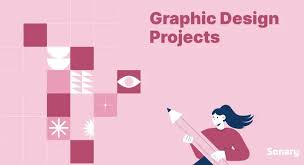

Definition & Principles: Explains that graphic design is the art of visual communication using elements like line, color, and typography to convey a specific message or solve a problem. Specializations: Differentiates between various design fields, such as branding (logos and identity), user interface (UI) design, web design, and print/publication design. Skills & Tools: Focuses on the technical (proficiency in software like Adobe Photoshop/Illustrator) and soft skills (creativity, communication, project management) required by a designer. Process & Career: Outlines the typical design workflow from concept to creation and discusses professional aspects like job roles, industries, and career paths.

